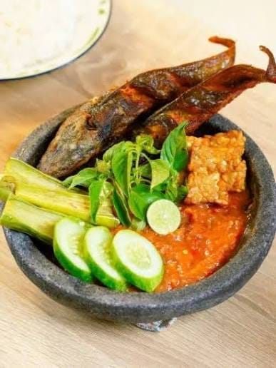
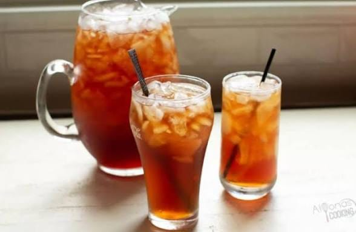

Makanan
Nasi Ayam Goreng
Nasi hangat dengan ayam goreng bumbu kuning, lalapan, dan sambal.
Rp25.000
Nasi hangat dengan ayam goreng bumbu kuning, lalapan, dan sambal.
Rp25.000

Soto kuah bening dengan suwiran ayam, telur, dan bihun.
Rp18.000

Mie goreng bumbu kecap dengan telur dan sayuran.
Rp15.000

Lele goreng garing dengan sambal terasi dan lalapan segar.
Rp25.000

Teh seduh dingin dengan gula pas, segar diminum siang hari.
Rp7.000
Perasan jeruk segar dengan es batu.
Rp10.000